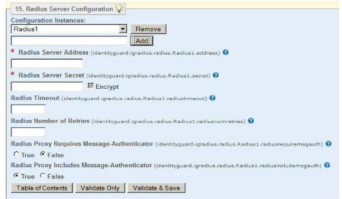
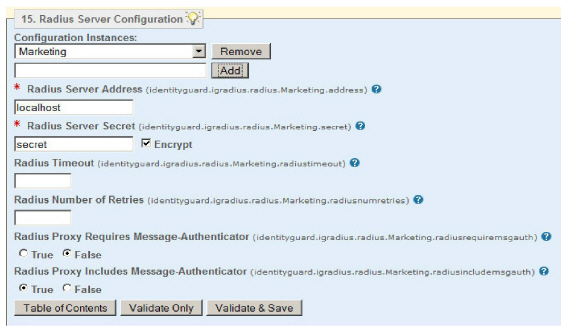
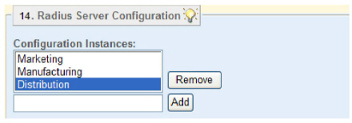
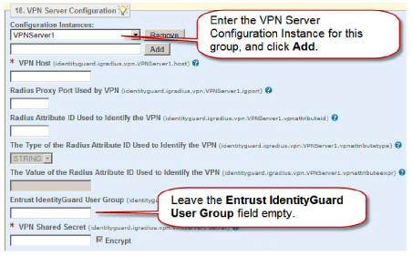
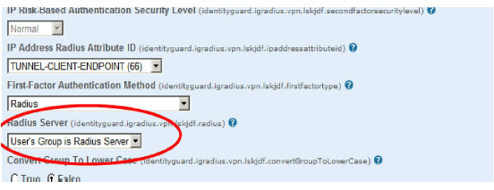

|
IdentityGuard Server 11.0 Administration Guide |
|
IdentityGuard Server 11.0 Administration Guide |
Use the Properties Editor to set up and modify any Radius server used by the Radius proxy.
This section includes the following procedures:
● To configure a Radius server
● To allow selection of Radius server based on Entrust IdentityGuard group name
1. Start the Entrust IdentityGuard Properties Editor. (See Log in or out of the Properties Editor.)
2. On the Table of Contents, click Radius Server Configuration.

3. Initially, you see just one empty field below Configuration Instances.
● To configure one Radius server, enter a unique Radius server name. Click Add.
The pane expands to reveal the properties. Properties marked with the red * are required.
● To use dynamic Radius server to group mapping at authentication, create multiple Radius server Configuration Instances, one for each Entrust IdentityGuard group. Give each Radius server instance the name of an IdentityGuard group. See also To allow selection of Radius server based on Entrust IdentityGuard group name.
Note: When using MS-CHAPv2, the user ID entered at login is included in the MS-CHAPv2 data, so the user ID (with group ID) entered in the VPN server must match the user ID used by the third-party Radius server. If the third-party Radius server cannot interpret user IDs that include the group, it is not able to validate MSCHAPv2 protected responses.
The pane expands to reveal the properties. Properties marked with the red * are required.
4. In the Radius Server Address field, type a unique Radius server host name or IP address. This provides the address of the Radius server where the Radius proxy sends Radius requests. You can set this field with one Radius server address or several Radius server addresses mapped to Entrust IdentityGuard groups.
● To configure a Radius Server Address field, you must enter the server name (or IP address) and the port the radius service is listening on. That is, the address must be in the following format:
radius1.entrust.com:1812
● To enter more than one address as part of a failover setup, see Configuring Radius server for failover and high availability.
5. In the Radius Server Secret field, type the Radius server secret. The server secret is the password value the Radius client uses to protect the message. The secret you enter must match the server secret set for the Radius server. Leave the Encrypted option selected so that Entrust IdentityGuard stores an encrypted version of the secret.
6. Click Validate & Save.
7. Log out of the Properties Editor and restart the Entrust IdentityGuard Server service and the Radius proxy service after you finish making all property changes.
1. Start the Entrust IdentityGuard Properties Editor. (See Log in or out of the Properties Editor.)
2. On the Table of Contents, click Radius Server Configuration.
3. Select the name of a Radius server from the Configuration Instances, drop-down list.
The Radius server settings appear in the property fields.
4. Change the property settings as required. For a complete list of properties, see Radius Server Configuration.
5. Click Validate & Save.
6. Log out of the Properties Editor and restart the Entrust IdentityGuard Server service and the Radius proxy service after you finish making all property changes.
To allow selection of Radius server based on Entrust IdentityGuard group name
1. Start the Entrust IdentityGuard Properties Editor. (See Log in or out of the Properties Editor.)
2. On the Table of Contents, click Radius Server Configuration.

3. Initially, you see just one empty field below Configuration Instances.
To use dynamic Radius server to group mapping at authentication, create multiple Radius servers Configuration Instances, one for each Entrust IdentityGuard group. Give each Radius server instance the name of an IdentityGuard group. See also To allow selection of Radius server based on Entrust IdentityGuard group name.
For example, if your Entrust IdentityGuard groups are called Marketing, Manufacturing, and Distribution, create three Radius Server Configuration instances, also named Marketing, Manufacturing, and Distribution.

This sets up a mapping of each VPN server configuration to a Radius server configuration. All logins that use the form groupid/userid will be directed to the Radius server with the matching group name, groupid.
Note: Entrust
IdentityGuard user login can also be of the form groupid\userid or
userid@groupid. If you are
using either of these, they must be converted to the Entrust IdentityGuard
format, groupid/userid. This
conversion will be completed automatically when you set the corresponding
property to True.
For groupid\userid, set Radius Proxy Converts Backslash to
True.
For userid@groupid, set Radius Proxy Converts At Sign to
True.
Note: When using MS-CHAPv2, the user ID entered at login is included in the MS-CHAPv2 data, so the user ID (with group ID) entered in the VPN server must match the user ID used by the third-party Radius server. If the third-party Radius server cannot interpret user IDs that include the group, it is not able to validate MSCHAPv2 protected responses.
The pane expands to reveal the properties. Properties marked with the red * are required.
4. In the Radius Server Address field, type a unique Radius server host name or IP address. This provides the address of the Radius server where the Radius proxy sends Radius requests. You can set this field with one Radius server address or several Radius server addresses mapped to Entrust IdentityGuard groups.
● To configure a Radius Server Address field, you must enter the server name (or IP address) and the port the radius service is listening on. That is, the address must be in the following format:
radius1.entrust.com:1812
● To enter more than one address as part of a failover setup, see Configuring Radius server for failover and high availability.
5. In the Radius Server Secret field, type the Radius server secret. The server secret is the password value the Radius client uses to protect the message. The secret you enter must match the server secret set for the Radius server. Leave the Encrypted option selected so that Entrust IdentityGuard stores an encrypted version of the secret.
6. Click Validate & Save.
7. Click Table of Contents to return to the Properties Editor Table of Contents.
8. Click VPN Server Configuration.
The VPN Server Configuration pane appears.

9. In the empty field below Configuration Instances, type a unique instance name and click Add.
This provides a unique label used by Entrust IdentityGuard to refer to this server. The label can be anything you choose, such as the name of your VPN server or the name of a VPN user group.
The pane expands to reveal available VPN properties. Most properties include default settings. Only the VPN Host and VPN Shared Secret properties are required. Others are required depending on which first-factor authentication you intend to use.
10. In the VPN Host field, type a unique VPN server host name, using either a DNS or IP address.
11. In the VPN Shared Secret field, type the VPN server secret. This secret must match the server secret already set for the VPN server. Leave the Encrypted option selected so that Entrust IdentityGuard stores an encrypted version of the secret.

12. Leave the Radius Server property set to User’s Group is Radius Server.
13. Change or enter any of the other VPN properties, as required.
Note: Do not use the Entrust IdentityGuard User Group property. Leave it blank.
14. Click Validate & Save.
15. Log out of the Properties Editor and restart the Entrust IdentityGuard Server service and the Radius proxy service after you finish making all property changes.
1. Start the Entrust IdentityGuard Properties Editor. (See Log in or out of the Properties Editor.)
2. On the Table of Contents, click Radius Server Configuration.
3. Select the name of a Radius server from the Configuration Instances, drop-down list.
4. Click Remove.
5. Click OK on the prompt dialog box.
6. Log out of the Properties Editor and restart the Entrust IdentityGuard Server service and the Radius proxy service after you finish making all property changes.